Classes | |
| class | DualQuaternion |
| class | HandEyeCalibration |
| Implements Hand Eye Calibration which determines an unknown 3d transform using two stacks of known transforms. More... | |
| class | PoseError |
Typedefs | |
| typedef DualQuaternion< float > | DualQuaternionf |
| typedef DualQuaternion< double > | DualQuaterniond |
Functions | |
| template<typename T > | |
| Eigen::Quaternion< T > | expq (const Eigen::Quaternion< T > &q) |
| template<typename T > | |
| Eigen::Quaternion< T > | logq (const Eigen::Quaternion< T > &q) |
| template<typename T > | |
| DualQuaternion< T > | operator+ (const DualQuaternion< T > &dq1, const DualQuaternion< T > &dq2) |
| template<typename T > | |
| DualQuaternion< T > | operator- (const DualQuaternion< T > &dq1, const DualQuaternion< T > &dq2) |
| template<typename T > | |
| DualQuaternion< T > | operator* (T scale, const DualQuaternion< T > &dq) |
| template<typename T > | |
| std::ostream & | operator<< (std::ostream &, const DualQuaternion< T > &) |
| template<typename T > | |
| DualQuaternion< T > | expdq (const std::pair< Eigen::Quaternion< T >, Eigen::Quaternion< T >> &v8x1) |
| template<typename T > | |
| std::pair< Eigen::Quaternion< T >, Eigen::Quaternion< T > > | logdq (const DualQuaternion< T > &dq) |
| template<typename T > | |
| T | square (const T &m) |
| template<typename T > | |
| Eigen::Matrix< T, 3, 3 > | skew (const Eigen::Matrix< T, 3, 1 > &vec) |
| template<typename Derived > | |
| Eigen::MatrixBase< Derived >::PlainObject | sqrtm (const Eigen::MatrixBase< Derived > &A) |
| template<typename T > | |
| Eigen::Matrix< T, 3, 3 > | AngleAxisToRotationMatrix (const Eigen::Matrix< T, 3, 1 > &rvec) |
| template<typename T > | |
| Eigen::Quaternion< T > | AngleAxisToQuaternion (const Eigen::Matrix< T, 3, 1 > &rvec) |
| template<typename T > | |
| void | AngleAxisToQuaternion (const Eigen::Matrix< T, 3, 1 > &rvec, T *q) |
| template<typename T > | |
| Eigen::Matrix< T, 3, 1 > | RotationToAngleAxis (const Eigen::Matrix< T, 3, 3 > &rmat) |
| template<typename T > | |
| void | QuaternionToAngleAxis (const T *const q, Eigen::Matrix< T, 3, 1 > &rvec) |
| template<typename T > | |
| Eigen::Matrix< T, 3, 3 > | QuaternionToRotation (const T *const q) |
| template<typename T > | |
| void | QuaternionToRotation (const T *const q, T *rot) |
| template<typename T > | |
| Eigen::Matrix< T, 4, 4 > | QuaternionMultMatLeft (const Eigen::Quaternion< T > &q) |
| template<typename T > | |
| Eigen::Matrix< T, 4, 4 > | QuaternionMultMatRight (const Eigen::Quaternion< T > &q) |
| template<typename T > | |
| void | AngleAxisAndTranslationToScrew (const Eigen::Matrix< T, 3, 1 > &rvec, const Eigen::Matrix< T, 3, 1 > &tvec, T &theta, T &d, Eigen::Matrix< T, 3, 1 > &l, Eigen::Matrix< T, 3, 1 > &m) |
| template<typename T > | |
| Eigen::Matrix< T, 3, 3 > | RPY2mat (T roll, T pitch, T yaw) |
| template<typename T > | |
| void | mat2RPY (const Eigen::Matrix< T, 3, 3 > &m, T &roll, T &pitch, T &yaw) |
| template<typename T > | |
| Eigen::Matrix< T, 4, 4 > | homogeneousTransform (const Eigen::Matrix< T, 3, 3 > &R, const Eigen::Matrix< T, 3, 1 > &t) |
| template<typename T > | |
| Eigen::Matrix< T, 4, 4 > | poseWithCartesianTranslation (const T *const q, const T *const p) |
| template<typename T > | |
| Eigen::Matrix< T, 4, 4 > | poseWithSphericalTranslation (const T *const q, const T *const p, const T scale=T(1.0)) |
| template<typename T > | |
| T | sampsonError (const Eigen::Matrix< T, 3, 3 > &E, const Eigen::Matrix< T, 3, 1 > &p1, const Eigen::Matrix< T, 3, 1 > &p2) |
| template<typename T > | |
| T | sampsonError (const Eigen::Matrix< T, 3, 3 > &R, const Eigen::Matrix< T, 3, 1 > &t, const Eigen::Matrix< T, 3, 1 > &p1, const Eigen::Matrix< T, 3, 1 > &p2) |
| template<typename T > | |
| T | sampsonError (const Eigen::Matrix< T, 4, 4 > &H, const Eigen::Matrix< T, 3, 1 > &p1, const Eigen::Matrix< T, 3, 1 > &p2) |
| template<typename T > | |
| Eigen::Matrix< T, 3, 1 > | transformPoint (const Eigen::Matrix< T, 4, 4 > &H, const Eigen::Matrix< T, 3, 1 > &P) |
| template<typename T > | |
| Eigen::Matrix< T, 4, 4 > | estimate3DRigidTransform (const std::vector< Eigen::Matrix< T, 3, 1 >, Eigen::aligned_allocator< Eigen::Matrix< T, 3, 1 >>> &points1, const std::vector< Eigen::Matrix< T, 3, 1 >, Eigen::aligned_allocator< Eigen::Matrix< T, 3, 1 >>> &points2) |
| template<typename T > | |
| Eigen::Matrix< T, 4, 4 > | estimate3DRigidSimilarityTransform (const std::vector< Eigen::Matrix< T, 3, 1 >, Eigen::aligned_allocator< Eigen::Matrix< T, 3, 1 >>> &points1, const std::vector< Eigen::Matrix< T, 3, 1 >, Eigen::aligned_allocator< Eigen::Matrix< T, 3, 1 >>> &points2) |
| template<typename T > | |
| static Eigen::MatrixXd | ScrewToStransposeBlockofT (const Eigen::Matrix< T, 3, 1 > &a, const Eigen::Matrix< T, 3, 1 > &a_prime, const Eigen::Matrix< T, 3, 1 > &b, const Eigen::Matrix< T, 3, 1 > &b_prime) |
| template<typename T > | |
| static Eigen::MatrixXd | AxisAngleToSTransposeBlockOfT (const Eigen::Matrix< T, 3, 1 > &rvec1, const Eigen::Matrix< T, 3, 1 > &tvec1, const Eigen::Matrix< T, 3, 1 > &rvec2, const Eigen::Matrix< T, 3, 1 > &tvec2) |
Typedef Documentation
◆ DualQuaterniond
| typedef DualQuaternion<double> cicv::DualQuaterniond |
◆ DualQuaternionf
| typedef DualQuaternion<float> cicv::DualQuaternionf |
Function Documentation
◆ AngleAxisAndTranslationToScrew()
template<typename T >
| void cicv::AngleAxisAndTranslationToScrew | ( | const Eigen::Matrix< T, 3, 1 > & | rvec, |
| const Eigen::Matrix< T, 3, 1 > & | tvec, | ||
| T & | theta, | ||
| T & | d, | ||
| Eigen::Matrix< T, 3, 1 > & | l, | ||
| Eigen::Matrix< T, 3, 1 > & | m | ||
| ) |
- Parameters
-
theta - rotation about screw axis d - projection of tvec on the rotation axis l - screw axis direction m - screw axis moment
Here is the caller graph for this function:
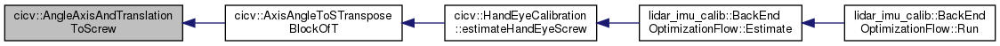
◆ AngleAxisToQuaternion() [1/2]
template<typename T >
| Eigen::Quaternion<T> cicv::AngleAxisToQuaternion | ( | const Eigen::Matrix< T, 3, 1 > & | rvec | ) |
◆ AngleAxisToQuaternion() [2/2]
template<typename T >
| void cicv::AngleAxisToQuaternion | ( | const Eigen::Matrix< T, 3, 1 > & | rvec, |
| T * | q | ||
| ) |
◆ AngleAxisToRotationMatrix()
template<typename T >
| Eigen::Matrix<T, 3, 3> cicv::AngleAxisToRotationMatrix | ( | const Eigen::Matrix< T, 3, 1 > & | rvec | ) |
◆ AxisAngleToSTransposeBlockOfT()
template<typename T >
|
static |
Reorganize data to prepare for running SVD Daniilidis 1999 Section 6, Equations (31) and (33), on page 291
Here is the call graph for this function:
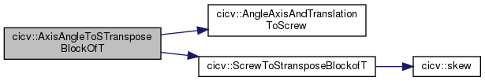
Here is the caller graph for this function:
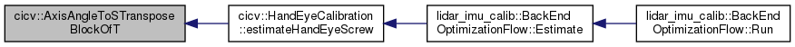
◆ estimate3DRigidSimilarityTransform()
template<typename T >
| Eigen::Matrix<T, 4, 4> cicv::estimate3DRigidSimilarityTransform | ( | const std::vector< Eigen::Matrix< T, 3, 1 >, Eigen::aligned_allocator< Eigen::Matrix< T, 3, 1 >>> & | points1, |
| const std::vector< Eigen::Matrix< T, 3, 1 >, Eigen::aligned_allocator< Eigen::Matrix< T, 3, 1 >>> & | points2 | ||
| ) |
Here is the call graph for this function:
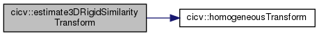
◆ estimate3DRigidTransform()
template<typename T >
| Eigen::Matrix<T, 4, 4> cicv::estimate3DRigidTransform | ( | const std::vector< Eigen::Matrix< T, 3, 1 >, Eigen::aligned_allocator< Eigen::Matrix< T, 3, 1 >>> & | points1, |
| const std::vector< Eigen::Matrix< T, 3, 1 >, Eigen::aligned_allocator< Eigen::Matrix< T, 3, 1 >>> & | points2 | ||
| ) |
Here is the call graph for this function:
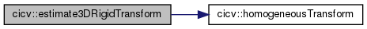
◆ expdq()
template<typename T >
| DualQuaternion<T> cicv::expdq | ( | const std::pair< Eigen::Quaternion< T >, Eigen::Quaternion< T >> & | v8x1 | ) |
Here is the call graph for this function:
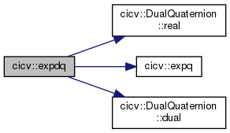
◆ expq()
template<typename T >
| Eigen::Quaternion<T> cicv::expq | ( | const Eigen::Quaternion< T > & | q | ) |
Here is the caller graph for this function:

◆ homogeneousTransform()
template<typename T >
| Eigen::Matrix<T, 4, 4> cicv::homogeneousTransform | ( | const Eigen::Matrix< T, 3, 3 > & | R, |
| const Eigen::Matrix< T, 3, 1 > & | t | ||
| ) |
Here is the caller graph for this function:
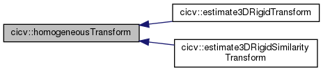
◆ logdq()
template<typename T >
| std::pair<Eigen::Quaternion<T>, Eigen::Quaternion<T> > cicv::logdq | ( | const DualQuaternion< T > & | dq | ) |
Here is the call graph for this function:
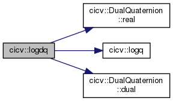
◆ logq()
template<typename T >
| Eigen::Quaternion<T> cicv::logq | ( | const Eigen::Quaternion< T > & | q | ) |
Here is the caller graph for this function:
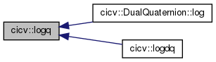
◆ mat2RPY()
template<typename T >
| void cicv::mat2RPY | ( | const Eigen::Matrix< T, 3, 3 > & | m, |
| T & | roll, | ||
| T & | pitch, | ||
| T & | yaw | ||
| ) |
◆ operator*()
template<typename T >
| DualQuaternion< T > cicv::operator* | ( | T | scale, |
| const DualQuaternion< T > & | dq | ||
| ) |
Here is the call graph for this function:
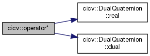
◆ operator+()
template<typename T >
| DualQuaternion< T > cicv::operator+ | ( | const DualQuaternion< T > & | dq1, |
| const DualQuaternion< T > & | dq2 | ||
| ) |
◆ operator-()
template<typename T >
| DualQuaternion< T > cicv::operator- | ( | const DualQuaternion< T > & | dq1, |
| const DualQuaternion< T > & | dq2 | ||
| ) |
◆ operator<<()
template<typename T >
| std::ostream & cicv::operator<< | ( | std::ostream & | out, |
| const DualQuaternion< T > & | dq | ||
| ) |
◆ poseWithCartesianTranslation()
template<typename T >
| Eigen::Matrix<T, 4, 4> cicv::poseWithCartesianTranslation | ( | const T *const | q, |
| const T *const | p | ||
| ) |
Here is the call graph for this function:
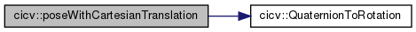
◆ poseWithSphericalTranslation()
template<typename T >
| Eigen::Matrix<T, 4, 4> cicv::poseWithSphericalTranslation | ( | const T *const | q, |
| const T *const | p, | ||
| const T | scale = T(1.0) |
||
| ) |
Here is the call graph for this function:
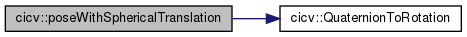
◆ QuaternionMultMatLeft()
template<typename T >
| Eigen::Matrix<T, 4, 4> cicv::QuaternionMultMatLeft | ( | const Eigen::Quaternion< T > & | q | ) |
◆ QuaternionMultMatRight()
template<typename T >
| Eigen::Matrix<T, 4, 4> cicv::QuaternionMultMatRight | ( | const Eigen::Quaternion< T > & | q | ) |
◆ QuaternionToAngleAxis()
template<typename T >
| void cicv::QuaternionToAngleAxis | ( | const T *const | q, |
| Eigen::Matrix< T, 3, 1 > & | rvec | ||
| ) |
◆ QuaternionToRotation() [1/2]
template<typename T >
| Eigen::Matrix<T, 3, 3> cicv::QuaternionToRotation | ( | const T *const | q | ) |
Here is the call graph for this function:
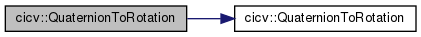
◆ QuaternionToRotation() [2/2]
template<typename T >
| void cicv::QuaternionToRotation | ( | const T *const | q, |
| T * | rot | ||
| ) |
Here is the caller graph for this function:

◆ RotationToAngleAxis()
template<typename T >
| Eigen::Matrix<T, 3, 1> cicv::RotationToAngleAxis | ( | const Eigen::Matrix< T, 3, 3 > & | rmat | ) |
◆ RPY2mat()
template<typename T >
| Eigen::Matrix<T, 3, 3> cicv::RPY2mat | ( | T | roll, |
| T | pitch, | ||
| T | yaw | ||
| ) |
◆ sampsonError() [1/3]
template<typename T >
| T cicv::sampsonError | ( | const Eigen::Matrix< T, 3, 3 > & | E, |
| const Eigen::Matrix< T, 3, 1 > & | p1, | ||
| const Eigen::Matrix< T, 3, 1 > & | p2 | ||
| ) |
Here is the call graph for this function:
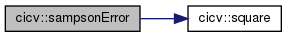
Here is the caller graph for this function:
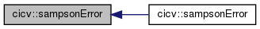
◆ sampsonError() [2/3]
template<typename T >
| T cicv::sampsonError | ( | const Eigen::Matrix< T, 3, 3 > & | R, |
| const Eigen::Matrix< T, 3, 1 > & | t, | ||
| const Eigen::Matrix< T, 3, 1 > & | p1, | ||
| const Eigen::Matrix< T, 3, 1 > & | p2 | ||
| ) |
Here is the call graph for this function:
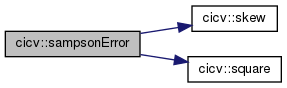
◆ sampsonError() [3/3]
template<typename T >
| T cicv::sampsonError | ( | const Eigen::Matrix< T, 4, 4 > & | H, |
| const Eigen::Matrix< T, 3, 1 > & | p1, | ||
| const Eigen::Matrix< T, 3, 1 > & | p2 | ||
| ) |
Here is the call graph for this function:
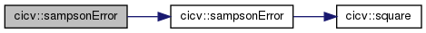
◆ ScrewToStransposeBlockofT()
template<typename T >
|
static |
Reorganize data to prepare for running SVD Daniilidis 1999 Section 6, Equations (31) and (33), on page 291
Here is the call graph for this function:

Here is the caller graph for this function:
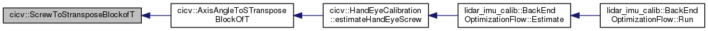
◆ skew()
template<typename T >
| Eigen::Matrix<T, 3, 3> cicv::skew | ( | const Eigen::Matrix< T, 3, 1 > & | vec | ) |
Here is the caller graph for this function:
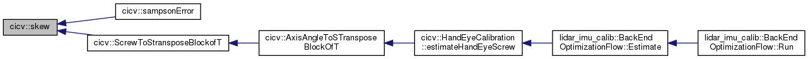
◆ sqrtm()
template<typename Derived >
| Eigen::MatrixBase<Derived>::PlainObject cicv::sqrtm | ( | const Eigen::MatrixBase< Derived > & | A | ) |
◆ square()
template<typename T >
| T cicv::square | ( | const T & | m | ) |
Here is the caller graph for this function:
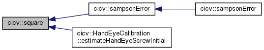
◆ transformPoint()
template<typename T >
| Eigen::Matrix<T, 3, 1> cicv::transformPoint | ( | const Eigen::Matrix< T, 4, 4 > & | H, |
| const Eigen::Matrix< T, 3, 1 > & | P | ||
| ) |